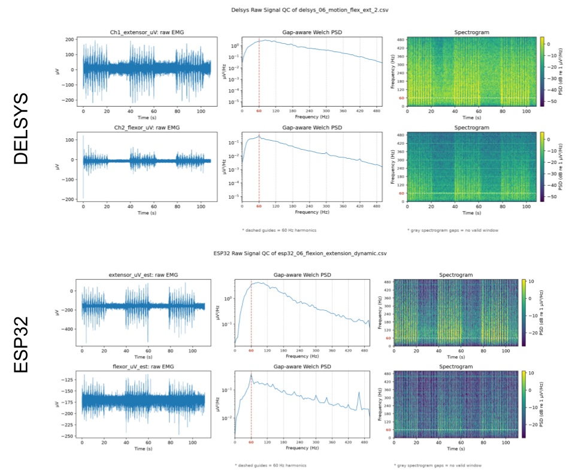
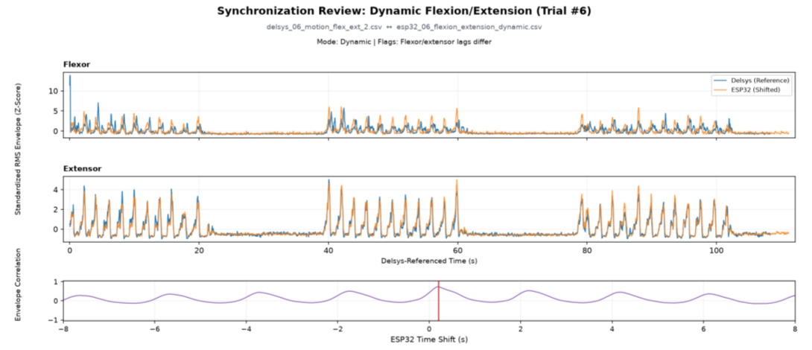
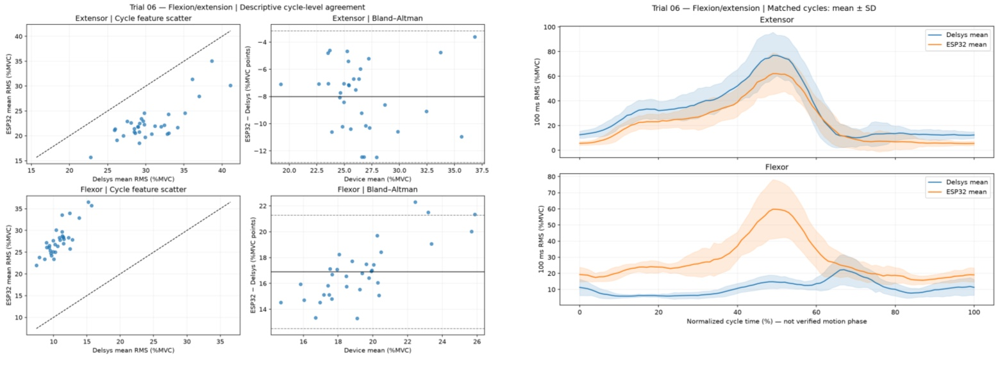

Stroke sEMG
A low-cost, two-channel surface EMG wearable for stroke rehabilitation research. It records forearm flexor and extensor activity, logs to an SD card, streams over Bluetooth, and has been validated against a Delsys Trigno research system.
Surface EMG · Analog signal conditioning · ESP32 · BLE + Wi-Fi · SD logging · Python · Butterworth / notch filtering · TKEO · Fusion · 3D printing · PCB design
- Electrode boardsTwo sensor boards held against the forearm, one per channel. Each sends its signal down a 3.5 mm cable.
- BandHolds the electrodes on the muscle so they stay put while you move.
- Sensor cables3.5 mm cables from each electrode board to its processing board.
- Processing boardsGravity analog EMG boards that amplify and filter each channel, then hand it to the Beetle over a 3-pin JST.
- Beetle ESP32-C6Reads both channels on its ADC. USB-C for power and data.
- Housing3D-printed, 59 × 51 × 21 mm. Slots hold both boards on top and the Beetle below, with room at the back for the JST wiring.
- LidDrops into a slot at the open end and carries the USB-C cutout.
Overview
Stroke recovery is mostly tracked by watching how a patient moves. Surface EMG adds a direct readout of the muscle activity behind the movement, but research-grade systems are expensive and tied to the lab. Our team is building a low-cost wearable that can go home with patients, working with Dr. Raghavan's stroke rehabilitation lab at Johns Hopkins.
The device records two channels from the forearm, one on the wrist flexors and one on the extensors. I work on the hardware: the housing and second build shown above, and the v2 board.
How it works
- SenseDry electrode boardsPick up the muscle's voltage through the skin, one board per muscle.
- ConditionGravity analog EMGAmplifies and filters each channel into a clean analog signal.
- SampleESP32 ADC, 1 kHzDigitizes both channels at 1,000 samples per second.
- Store + streamSD card, BLE, Wi-FiLogs to SD, streams a live view, and offloads sessions to a laptop.
Hardware
Each channel has two boards. The electrode board on the band picks up the raw signal, and a Gravity analog EMG board in the housing amplifies and filters it. Both feed the microcontroller's ADC.
The first prototype was a FireBeetle ESP32 on a cut-down breadboard with jumper wires. It worked, but the jumpers came loose and both signal pins sat on the ESP32's ADC2, which shares hardware with the Wi-Fi radio. Powering it from a power bank also added a steady ~10 Hz noise. The redesign moves to a Beetle ESP32-C6 in a 3D-printed housing (59 × 51 × 21 mm) that prints without supports. The two processing boards slide in on rails, the Beetle slides in underneath, and a drop-in lid closes the end. The sensor jacks come out the front, and the JST wiring stays inside.
Firmware and software
The firmware samples both channels at 1 kHz and writes 12-byte records to the SD card in blocks of 256, so recording never waits on the radio. Bluetooth (NimBLE) handles session control and a live signal view, and Wi-Fi offloads finished session files. A Python GUI sets up each session (rest and motion timing, number of repeats), shows the live signal, and pulls the files down for analysis.
Validation
We recorded the same movements with our device and a Delsys Trigno system, using a fixed protocol:
- 15 s relaxed baseline.
- 3 wrist flexion and 3 wrist extension maximum voluntary contractions (MVCs), 5 s each with 30 s rest.
- Dynamic wrist flexion/extension and radial/ulnar deviation at 60 bpm, 20 s of motion and 20 s of rest, three times each.
The analysis pipeline, in Python:
- Raw QC: sampling gaps, clipping and dropouts, and Welch PSDs and spectrograms to find 60 Hz interference.
- Sync: the two systems were aligned by cross-correlating 100 ms RMS envelopes, then checked for clock drift.
- Preprocessing: zero-phase Butterworth band-pass (20–450 Hz), a notch where the spectrum called for one, RMS envelopes normalized to %MVC, and each movement cycle resampled to 101 points.
- Onset: TKEO activation detection, thresholded at the rest mean + 6 SD.


Results
The shape of each contraction tracks the research system closely, but absolute amplitude doesn't. On the clearest flexion/extension trial, our extensor channel read about 8 %MVC lower than the Delsys and the flexor about 17 %MVC higher. Radial/ulnar deviation separated poorly, and activation onsets didn't line up well. Some 60 Hz interference showed up on our flexor channel. Electrode placement, crosstalk between the two muscles, and the front end itself are the likely causes, and they set the goals for v2.

v2: custom PCB
v2 replaces the two Gravity boards with a single custom PCB. The Gravity boards fix the electrode spacing on a rigid three-contact plate, add their own wiring and noise, and leave digitizing to the microcontroller's ADC. A custom board lets us place the electrodes independently and keep the analog path short, with input protection and a proper bias/reference. The leading candidate for the front end is TI's ADS1292: two simultaneous 24-bit channels over SPI, with a 120 dB typical CMRR. The goal is to close the amplitude gap and cut the 60 Hz pickup seen in validation.